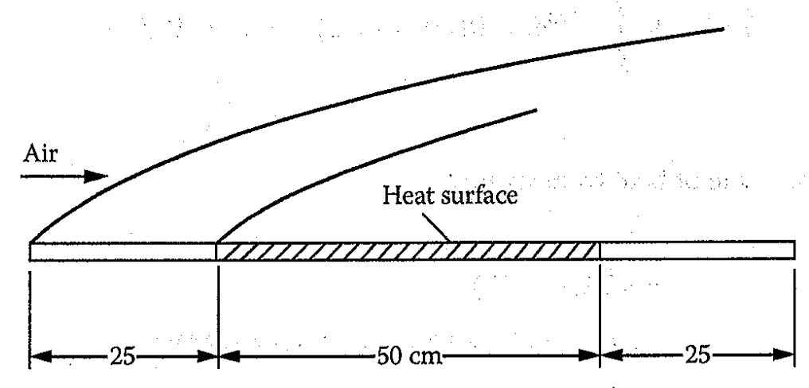

$$\tau_w=\rho U_{\infty}^2 \frac{d\theta}{dx}$$ where $\theta=\int_0^\delta \frac{u}{U_\infty}(1-\frac{u}{U_\infty})dx$ is the momentum thickness
For a cubic velocity profile, $\frac{u}{U_\infty}=\frac{3}{2}(\frac{y}{\delta})-\frac{1}{2}(\frac{y}{\delta})^3$, $\frac{\delta}{x}=\frac{4.64}{Re_x^{0.5}}$ and $C_{f,x}=\frac{0.646}{Re_x^{0.5}}$
$$q_w''=\rho C_p \frac{d}{dx} \int_0^{\delta_T} u(T-T_\infty) dy$$
For isothermal plate: $\frac{T-T_w}{T_\infty-T_w}=\frac{3}{2} \frac{y}{\delta_T} - \frac{1}{2} (\frac{y}{\delta_T})^3$ and $\frac{\delta_T}{\delta}<1$
$\frac{\delta_T}{x} = \frac{4.52}{Pr^{1/3}Re_x^{1/2}} \left[ 1- (x_0/x)^{3/4} \right]^{1/3}$
$Nu_x = 0.339 Pr^{1/3}Re_x^{1/2}[1-(x_0/x)^{-3/4}]^{1/3}$
For isoflux plate: $T_w(x)=T_\infty+\frac{2}{3}\frac{q_w''}{k}\delta_T$
$\frac{\delta_T}{x} = \frac{3.594}{Pr^{1/3}Re_x^{1/2}} \left[ 1- (x_0/x )\right]^{1/3}$
$Nu_x = 0.417 Pr^{1/3}Re_x^{1/2}[1-(x_0/x)]^{-1/3}$
The figure alongside shows a flat plate, 100 cm in length and 30 cm in width, which is used as a heating element. Air at 20°C and atmospheric pressure flows over the plate with a velocity of 6m/s. The plate has unheated sections at both ends, each 25 cm in length, and the heated section is maintained at 140°C. Calculate the total heat-transfer rate from the plate to the air.
Compute film temperature
$$T_f = \frac{T_w+T_\infty}{2}$$
$$T_f = \frac{20+140}{2} = 80^\circ C$$
At $80^\circ C$, the properties are
$\kappa$=0.0299 W/mK, $\nu=20.94e-06 m^2/s$